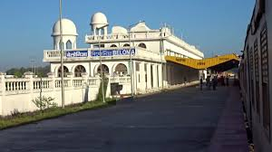
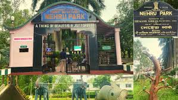
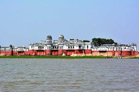
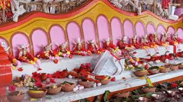

Cities And Places
Agartala
- Ujjayanta Palace: A majestic palace that now serves as a museum, showcasing the history and culture of Tripura.
- Neermahal: A beautiful water palace located on the banks of Rudrasagar Lake, famous for its stunning architecture.
- Tripura Sundari Temple: A significant Hindu temple dedicated to the goddess Tripura Sundari, known for its spiritual importance.

- Jagannath Bari: An ancient temple dedicated to Lord Jagannath, known for its serene atmosphere.
- Chatur Das Gumbaj: A historic monument featuring four domes, representing the unique architecture of the region.
- Agartala Eco Park: A beautiful park offering recreational activities, walking trails, and natural beauty.
Udaipur
- Tripura Sundari Temple: A significant Hindu temple dedicated to the goddess Tripura Sundari, known for its beautiful architecture.
- Udaipur Lake: A serene lake ideal for boating and enjoying the picturesque surroundings.
- Neermahal Palace: A stunning water palace built on the lake, showcasing exquisite Mughal architecture.

- Deer Park: A tranquil park featuring a variety of deer and lush greenery, perfect for family outings.
- Jampui Hill: A scenic hill station nearby, known for its tea gardens and breathtaking views.
- Rudrasagar Lake: A large water body famous for its picturesque setting and migratory birds.
Dharmanagar
- Krishna Nagar Temple: A beautiful temple dedicated to Lord Krishna, known for its serene ambiance and architecture.
- Bhanu Nagar Park: A popular recreational park offering walking trails, gardens, and a tranquil environment.
- Jampui Hill: Famous for its scenic beauty and tea gardens, ideal for nature lovers and trekkers.

- Unakoti: A historical site with ancient rock carvings and sculptures, set in a picturesque landscape.
- Gunjabari Temple: A local temple known for its cultural significance and vibrant festivals.
- Dharmanagar Railway Station: An important junction connecting the region, surrounded by local markets and eateries.
Kailashahar
- Unakoti: An ancient archaeological site featuring rock-cut sculptures and carvings, known as the "Kailash of the North."
- Jampui Hills: A scenic hill station offering lush landscapes and a pleasant climate, perfect for trekking and relaxation.
- Chobimura: A beautiful hill located near the river, famous for its stunning views and serene surroundings.

- Shiv Mandir: A popular temple dedicated to Lord Shiva, known for its beautiful architecture and serene atmosphere.
- Khampui Lake: A scenic lake surrounded by hills, ideal for picnics and enjoying nature.
- Local Markets: Vibrant markets where visitors can experience local culture, cuisine, and handicrafts.
Belonia
- Belonia Bazar: The main market area, bustling with local vendors and shops selling various goods.
- Shiv Temple: A revered temple dedicated to Lord Shiva, known for its serene ambiance and beautiful architecture.
- Khumulwng: A nearby picturesque village offering a glimpse into the local tribal culture and lifestyle.

- Bhumiya Baba Mandir: A popular local temple dedicated to Bhumiya Baba, surrounded by lush greenery.
- Radha Krishna Temple: A beautiful temple dedicated to Lord Krishna and Radha, often visited by devotees.
- Belonia Park: A tranquil park perfect for relaxation and family outings.
Nature Park
Nehru Park
- Nehru Park: A beautiful national park in Agartala, known for its lush greenery, diverse flora, and fauna, providing a serene escape for nature lovers.
- Wildlife Spotting: The park is home to various species of birds and animals, making it a great place for birdwatching and wildlife photography.
- Walking Trails: Scenic walking trails offer visitors a chance to explore the park's natural beauty and enjoy peaceful strolls.

- Family-Friendly Activities: The park features play areas for children and spaces for picnics, making it an ideal spot for families.
- Cultural Events: Occasionally hosts local cultural events and fairs, showcasing Tripura's rich heritage.
- Photography Opportunities: Scenic landscapes and vibrant flora provide excellent photography opportunities for visitors.
Rudrasagar Lake
- Rudrasagar Lake: A serene lake surrounded by lush greenery, known for its rich biodiversity and scenic beauty.
- Unakoti Hills: Famous for its ancient rock-cut sculptures and beautiful landscapes, located near the lake.
- Jampui Hills: Known for its pleasant climate and stunning views, ideal for trekking and nature walks.

- Rudrasagar Wildlife Sanctuary: Home to various species of flora and fauna, providing a habitat for wildlife enthusiasts.
- Water Sports: Offers activities like kayaking and boating for adventure seekers.
- Bird Watching: A great spot for bird watchers to see migratory and native birds.
Sepahijala Wildlife Sanctuary
- Habitat: A rich biodiversity hotspot, home to various species of flora and fauna, including unique primates and migratory birds.
- Eco-Tourism: Offers opportunities for eco-tourism with guided tours, nature trails, and bird-watching.
- Botanical Garden: Features a collection of medicinal plants and a butterfly park, showcasing the region's natural beauty.

- Wildlife Viewing: Opportunities to see animals like the capped langur, hoolock gibbons, and various bird species in their natural habitat.
- Nature Trails: Explore several well-maintained trails that offer a closer look at the sanctuary’s diverse ecosystems.
- Visitor Center: Provides information about the sanctuary's biodiversity and conservation efforts.
Trishna Wildlife Sanctuary
- Flora and Fauna: Home to diverse species including elephants, deer, and a variety of birds, making it a haven for wildlife enthusiasts.
- Eco-Tourism: Offers eco-friendly accommodations and guided tours to explore the rich biodiversity of the sanctuary.
- Adventure Activities: Visitors can enjoy activities like trekking and bird watching in the lush surroundings.

- Accessibility: Easily reachable from Agartala, the capital city of Tripura, making it a popular destination for tourists.
- Best Time to Visit: The sanctuary is best visited during the winter months from November to March for optimal wildlife sightings.
- Local Culture: The sanctuary is surrounded by tribal communities, offering visitors a glimpse into the local culture and traditions.
Festivals and Cultural Events
Garia Puja
Garia Puja is a significant festival celebrated by the Tripuri community in Tripura. It marks the beginning of the agricultural season and is dedicated to Garia, the deity of wealth and prosperity.
The festival usually takes place in the month of April and lasts for several days, filled with traditional rituals, music, and dance.

- Rituals: The festival involves various rituals, including the sacrifice of a chicken, offerings of rice, and the preparation of traditional dishes.
- Celebrations: Cultural performances, traditional music, and dance are integral parts of the celebrations, showcasing the rich heritage of Tripura.
- Community Involvement: Garia Puja fosters a sense of community, bringing people together to celebrate their cultural identity and agricultural roots.
Kharchi Puja
Kharchi Puja is a significant festival celebrated in Tripura, dedicated to the worship of the fourteen deities of the Tripuri community. This festival typically occurs in the month of July and lasts for a week. It is a time for purification and rituals, where devotees offer prayers to seek blessings and prosperity.

- Rituals: During the festival, rituals include the washing of the deities and offerings of various food items.
- Processions: Colorful processions are organized, featuring traditional music and dance, reflecting the rich cultural heritage of Tripura.
- Significance: Kharchi Puja symbolizes the connection between the people and their deities, fostering a sense of community and cultural identity.
Adventure and Nature Activities
Trekking and Hiking
- Unakoti: A famous trekking destination known for its ancient rock carvings and stunning landscapes.
- Jampui Hills: Renowned for its picturesque views, this area offers several trekking trails through lush greenery.
- Bhanu Dihing: A beautiful spot for hiking, offering trails that lead to serene viewpoints and local flora.

- Rudrasagar Lake: Offers opportunities for trekking around its scenic shores and enjoying nature.
- Agartala to Udaipur: This trekking route takes you through beautiful landscapes and local villages.
- Longtharai Hills: Known for its challenging trails, perfect for adventure enthusiasts.
Boating and Water Sports
- Ujjayanta Palace: Located by the lake, offers scenic views and boating options for visitors.
- Unakoti Waterfalls: A stunning waterfall ideal for adventure seekers, with opportunities for swimming and nature exploration.
- Jampui Hills: Known for its lush landscapes, it offers various trekking routes leading to serene water bodies.

- Rudrasagar Lake: A beautiful lake known for its boating facilities and picturesque surroundings.
- Sepahijala Wildlife Sanctuary: Offers eco-friendly boat rides through lush greenery, perfect for wildlife enthusiasts.
- Kamala Sagar Lake: Famous for its scenic beauty and boating activities, providing a serene environment.